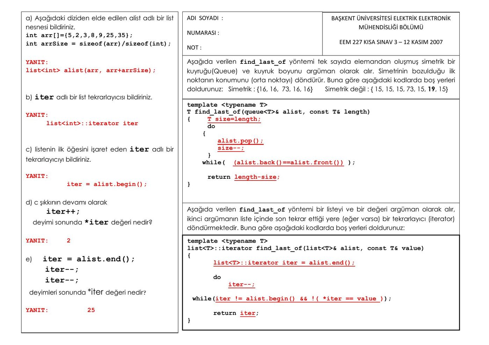

· EEM227
EEM227 Veri Yapıları: Kısa Sınav 2 ve Kısa Sınav 3 (Cevaplı), 2007
EEM227 – Veri Yapıları · 12.11.2007 · 16.10.2026
Bu yazı, Başkent Üniversitesi EEM227 Veri Yapıları dersinin 2007 güz döneminde yapılan iki kısa sınavını içeriyor. Kısa Sınav 2 (Ekim 2007) boş sınav kâğıdıdır: C++'ta kopyalama kurucusu, operatör yükleme ve vector işlemleri üzerine boşluk doldurma soruları. Kısa Sınav 3 (12 Kasım 2007) ise cevap anahtarıyla birlikte: STL list nesnesi, tekrarlayıcılar (iterator) ve şablon fonksiyonlar. Sınav kâğıtlarının orijinal PDF'leri yazının sonunda ZIP olarak indirilebilir.
Kısa Sınav 2
Kâğıdın başında "Adı Soyadı" ve "Numarası" alanları var. Yönerge: Eksik bırakılan yerleri uygun şekilde doldurunuz. Noktalı yerler ve boş bırakılan fonksiyon gövdeleri öğrencinin dolduracağı kısımlar.
#include <iostream>
using namespace std;
class deneme
{
private:
int x,y;
public:
deneme(......................................);
//kopyalama kurucusu (copy constructor)
deneme();
// parametresiz kurucu fonksiyon (constructor)
deneme(......................................);
// parametreli kurucu fonksiyon
.............................................;
// yıkıcı(destructor)
deneme& deneme::operator+(...................);
// + operatorü için overloading
..... ostream& operator<<(................................);
..... istream& operator>>(................................);
};
istream& operator>>(......................................)
{
oku>>nesne.x>>nesne.y;
return oku;
}
ostream& operator<<(........................................)
{ yaz<<nesne.x<<':'<<nesne.y<<endl;
return yaz; }
// + operatorü için overloading
.............................................(deneme& s)
{
[boş kutu]
}
deneme::deneme(int a,int b) // parametreli kurucu fonksiyon
{
[boş kutu]
}
deneme::deneme()
{
x=5;
y=10;
}
deneme::deneme(deneme &alias)// kopyalama kurucusu
{
[boş kutu]
}
deneme::~deneme()
{ cout<<"Yikici fonksiyon calisti.."; }
int main()
{ deneme d,e;
..............;
// 3 ve 2 değerleri ile kurulan c nesnesini yaratın
e=d+c;
e=..............;
// üst satırdaki işlemi farklı şekilde ifade edin
................;
// x isimli bir nesne yaratın
d=c;
x=....................;
// d ve c nesnesini toplayabilen işlemi yazın
return 0;
}Sınavdaki sınıf, 3. hafta ders notundaki deneme sınıfının (kopyalama kurucusu, + operatörü ve << >> operatörleri yüklenmiş örnek) aynısı; boşlukların cevapları o örnekte görülebilir. Örneğin kopyalama kurucusu deneme(deneme &), yıkıcı ~deneme(), stream operatörleri friend olarak bildiriliyor; main içinde deneme c(3,2);, e=d.operator+(c);, deneme x; ve x=d+c; yazılıyor.
Soru 1: vector işlemleri
Aşağıdaki kodlar veriliyor. Kodların yanlarında verilen boş yerlere ne gelmelidir?
int arr[]={3,5,2,7,9};
int arrSize = sizeof(arr)/sizeof(int);
vector<int> v, w(arr, arr+arrSize);
v.push_back(8); // v=(8), w={3,5,2,7,9}
v.push_back(10); // v = {8,10}, w={3,5,2,7,9}
w.pop_back(); // v = {8,10}, w={3,5,2,7}
w.pop_back(); // v = {8,10}, w = {3,5,2}
cout << v.back(); // Output: 10
cout << w.size(); // Output: 3
w.push_back(18); // v = {8,10}, w = {3,5,2,18}
w.resize(7); // v = {8,10}, w = {3,5,2,18,0,0,0}Kâğıtta yorum satırlarındaki değerler (vektörlerin her adımdaki içeriği ve çıktılar) yazılı olarak duruyor.
Kısa Sınav 3 (12 Kasım 2007) ve cevapları

List ve tekrarlayıcı soruları
a) Aşağıdaki diziden elde edilen alist adlı bir list nesnesi bildiriniz.
int arr[]={5,2,3,8,9,25,35};
int arrSize = sizeof(arr)/sizeof(int);Yanıt: list<int> alist(arr, arr+arrSize);
b) iter adlı bir list tekrarlayıcısı bildiriniz.
Yanıt: list<int>::iterator iter
c) Listenin ilk öğesini işaret eden iter adlı bir tekrarlayıcıyı bildiriniz.
Yanıt: iter = alist.begin();
d) c şıkkının devamı olarak iter++; deyimi sonunda *iter değeri nedir?
Yanıt: 2
e) iter = alist.end(); iter--; iter--; deyimleri sonunda *iter değeri nedir?
Yanıt: 25
Simetrik kuyrukta find_last_of
Aşağıda verilen find_last_of yöntemi tek sayıda elemandan oluşmuş simetrik bir kuyruğu (queue) ve kuyruk boyunu argüman olarak alır. Simetrinin bozulduğu ilk noktanın konumunu (orta noktayı) döndürür. Buna göre aşağıdaki kodlarda boş yerleri doldurunuz. Simetrik: {16, 16, 73, 16, 16}; simetrik değil: {15, 15, 15, 73, 15, 19, 15}.
Cevaplarla doldurulmuş hâli:
template <typename T>
T find_last_of(queue<T>& alist, const T& length)
{ T size=length;
do
{
alist.pop();
size--;
}
while( (alist.back()==alist.front()) );
return length-size;
}Örneğin {16, 16, 73, 16, 16} için iki eleman çıkarıldıktan sonra kuyruğun başında 73 kalır ve baştaki ile sondaki eleman artık eşit olmadığından döngü biter; fonksiyon 5 – 3 = 2 döndürür, yani 73'ün konumunu.
Listede bir değerin son geçtiği yer
Aşağıda verilen find_last_of yöntemi bir listeyi ve bir değeri argüman olarak alır, ikinci argümanın liste içinde son tekrar ettiği yere (eğer varsa) bir tekrarlayıcı (iterator) döndürmektedir. Buna göre aşağıdaki kodlarda boş yerleri doldurunuz.
Cevaplarla doldurulmuş hâli:
template <typename T>
list<T>::iterator find_last_of(list<T>& alist, const T& value)
{
list<T>::iterator iter = alist.end();
do
iter--;
while(iter != alist.begin() && !( *iter == value ));
return iter;
}Liste sondan başa doğru taranıyor; aranan değere rastlanınca ya da listenin başına gelinince duruluyor.
Not: Değer listede hiç yoksa fonksiyon alist.begin() döndürür; çağıran tarafın, dönen konumdaki değerin gerçekten aranan değer olup olmadığını ayrıca kontrol etmesi gerekir. Ayrıca şablon içinde bağımlı tür olduğu için güncel derleyicilerde typename list<T>::iterator yazılmalıdır.